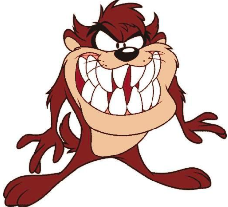
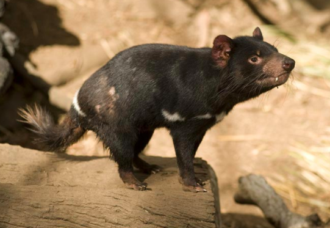
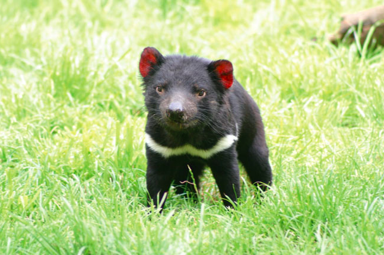
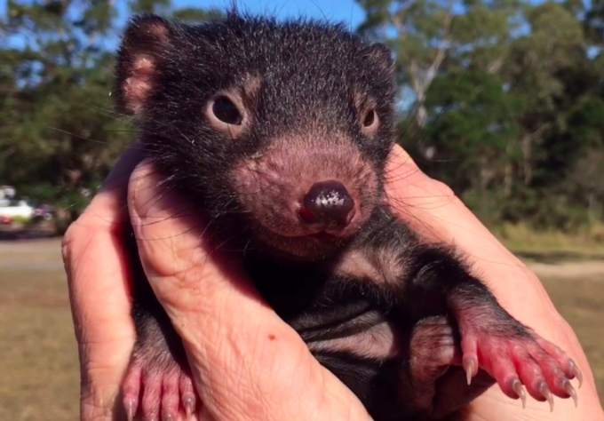
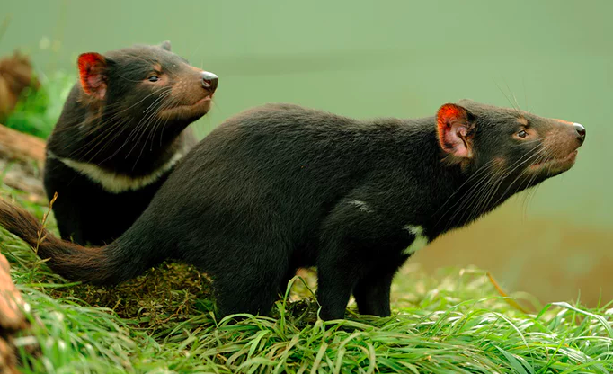
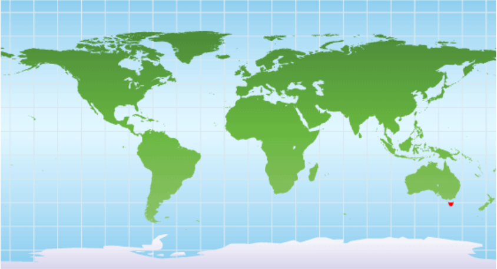

Not What You Were Thinking?
A Tasmanian Devil is a cute, but carnivorous, marsupial that resides in Tasmania. At one time, Devils were flourishing on Australia's Mainland. Because of their competition with dingoes, Tasmanian Devils left the Mainland, and ended up only living on the island state of Tasmania. The Tasmanian Devils got their name from Australian settlers. They chose the Devil's name because of their late night screeching, stress induced stench, and malicious look. Tasmanian Devils are most closely related to quolls.
What is a Tasmanian Devil?
Tasmanian Devils may sound scary, but they are actually only the size of small dogs! Their weight ranges between 10 pounds and 20 pounds, and the Devils are black. They are black, which camouflages them at night when they are out looking for food. The Devils are nocturnal, which means they sleep during the day and look for food at night. They are scavengers or hunters and eat carcasses or spoiled meat. When the Devils do go out at night, they will sometimes gather in groups, but other than that they are solitary animals. Tasmanian Devils breed between February and June. Their newborn Devils are called Joeys, and Joeys are born 50 at a time. Only four of the fifty survive, and that survival is based on which Joey is the fastest. Like Kangaroos, Tasmanian Devil mothers have a pouch that they keep their four Joeys in until they are to leave.
   Conservation
Even though it might sound like they are just starting their life at two years, most Tasmanian Devils do not make it past five years old. The Devils became endangered mostly because of their susceptibility to Devil Facial Tumor Disease, a fatal infectious cancer, which has dramatically decreased their population by 60% in the last 10 years. Some other factors of their endangerment include being hit by vehicles, being eaten by dogs, competing with fox, being poisoned, and having a low genetic diversity.
Because of all of the fatality factors mentioned above, there as low as 10,000 Tasmanian Devils left. Thankfully, the Devils are protected by Tasmania and constant efforts are being made to sustain their population there. As of 2008, the Tasmanian Devil was listed as endangered under the Tasmanian Government's Threatened Species Protection Act of 1996.